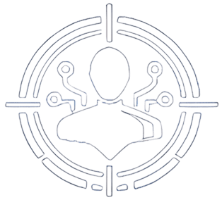
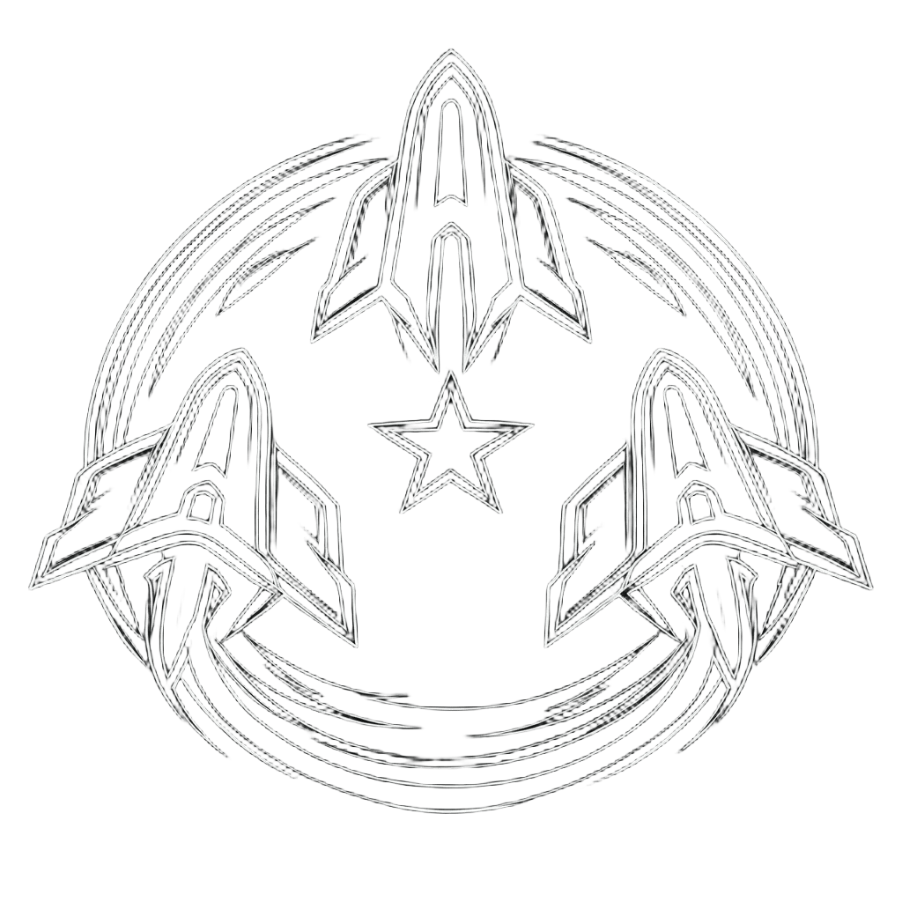

概要
Alliance
Winter Coalition/ Solyaris Chtonium 所属
Territory
北部ヌルセク・ガリスタス宙域
Tax
税率0%
（アライアンス要求最低税率のみ適用）
Activity
PvE / 採掘 / 防衛 / 艦隊戦
Philosophy
自律,防衛,協調,自由
方針
メンバーに最低限の負担を求めること
各自のリアル事情を尊重し、無理な参加や過度な義務は課しません。 参加はあくまで自発的であり、快適かつ長期的に活動できる環境を維持します。
ヌルセク活動にこだわること
北部ヌルセク宙域を拠点とし、戦略的な防衛・迎撃・艦隊行動を通じて、 宙域の安定と安全を確保することを重視しております。 活動は単なる戦闘参加にとどまらず、戦略的判断と連携を伴う行動を重視します。
拡大を目指すこと
組織としての影響力を高め、同盟内外での存在感を確立することを目標としております。 新規メンバーの受け入れや活動範囲の拡大を通じて、 持続可能で強固な組織づくりを進めてまいります。
これら3つの方針を柱として、我々は 「出られるときに出る」「守るべきときに守る」という基本姿勢のもと、 安定的かつ戦略的に活動してまいります。
文化

自律
 防衛
防衛

協調
自由
ここに理念が表示されます
使命
領域を守り、敵を排し、味方の活動空間を確保し続ける。
失敗を責める前に、次の一手を考える。
宇宙は、私たちを待ってはくれません。
考え続けるだけの方は、常に後手に回ることになります。
行動し続ける者だけが、宙域を変え、戦局を動かし、歴史を刻むことができるのです。
ドックに留まることは、安全ではあります。
しかし、私たちの居場所は、そこではありません。